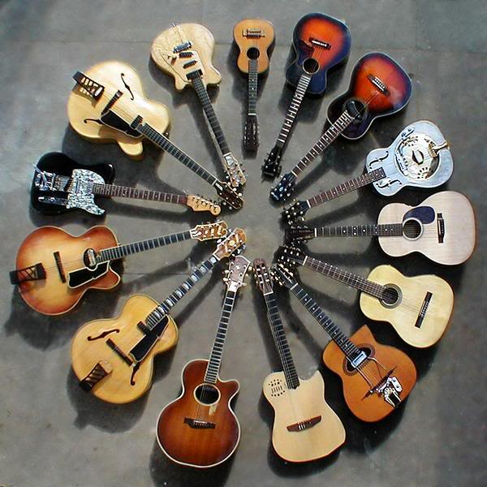

Existen varios tipos de guitarras: clásica, acústica, flamenca, eléctrica, electroacústica, semiacústica, MIDI, italiana, renacentista, barroca Rusa.
Historia de las guitarras
La guitarra es un instrumento musical de la familia de los cordófonos, es decir, los instrumentos que producen su sonido al hacer vibrar las cuerdas.
Es un instrumento de cuerda pulsada, compuesto de una caja de resonancia, un mástil sobre el que va adosado el diapasón o trastero y seis cuerdas. Sobre el diapasón van incrustados los trastes, que permiten dividir el continuo de sonidos en las 12 notas del sistema tonal, haciendo posible la interpretación de las mismas con mayor facilidad.
La guitarra es el fruto de siglos de evolución de estos cordófonos. Los orígenes de documento del instrumento proceden de civilizaciones de Asia menor de 2500 a. C. Desde entonces los condófonos se han desarrollado de muy diversas maneras a lo largo del tiempo con diferentes números de cuerdas y formas. Algunos instrumentos de la familia son el cuatro, el ukelele, el requinto, el charango y distintos tipos de guitarrón, como el guitarrón mexicano, de uso frecuente por los mariachis.
La guitarra tal y como la conocemos hoy es la heredera del instrumento que ideó Antonio de Torres, constructor almeriense que sentó los cánones y proporciones actuales. La guitarra es hoy un instrumento polifacético que se usa tanto en la música clásica como en las músicas populares. En su versión electrificada es el instrumento más utilizado en géneros como blues, rock y heavy metal. También es la protagonista en las músicas populares de raíces de España y Latinoamérica. Cabe destacar la importancia que la guitarra tiene en el flamenco, género musical que nace en España durante el siglo XVIII. En la actualidad los guitarristas flamencos suelen usar una guitarra con ligeras variaciones en la construcción, conocida como guitarra de flamenco. La guitarra clásica es también bastante frecuente entre los cantautores.